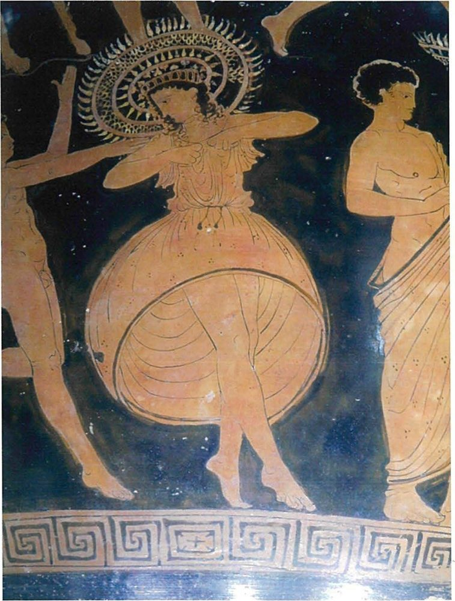
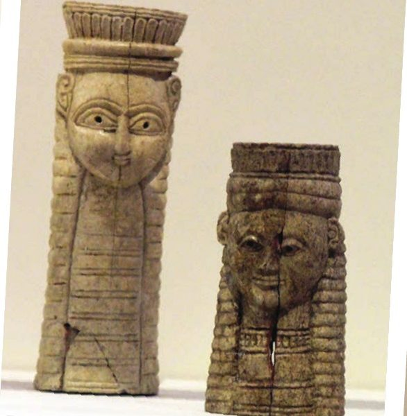

Spartan society to the Battle of Leuctra 371 BC · Lesson 21
Religion I: gods, goddesses and festivals
Spartans had a name for piety. Which gods did they honour, and where? What happened at Apollo’s three great festivals — and what do those festivals reveal about Spartan values?
Year 12 Ancient History · Section II, Option G · Present with → or space · Read on a phone with R

Spaced review · 6 minutes · from memory, no notes
Five questions
- 1In which century did Pausanias write?Lesson 19
- 2Which writer is our best witness for the boys’ education in the 4th century BC — and what is his main limitation?Lesson 19
- 3At whose sanctuary did the Spartans kill helot suppliants — an act they later blamed for the great earthquake?Lesson 12
- 4What was the Gymnopaedia?Lesson 10
- 5Predict: which festival lasted nine days in late summer?Today’s first new term
- The 2nd century AD — so he describes the Sparta of the Roman period.
- Xenophon (c. 430–c. 350 BC): he had first-hand information, but “reason to be grateful to Agesilaos and Sparta” (Cooley), so he is an admirer who chose what to stress.
- Poseidon’s, at Tainaron. The helots were granted safe conduct and then led away and killed; Thucydides says the Spartans “think that this was what brought the great earthquake at Sparta upon them” (1.128.1, Cooley E62b).
- A summer festival of Apollo in the agora, with choruses of boys and men and a test of endurance in the heat.
- The Karneia — the first of Apollo’s three great festivals today.
Learning intentions and success criteria · 2 minutes
Today’s goals
- explain what Spartan gods and festivals reveal about Spartan values
- explain significance rather than describe
- judge how far a late source can tell us about a classical festival
- outline the role of one god or goddess, with evidence
- explain the significance of the Karneia, Hyakinthia and Gymnopaedia for Spartan society
- give two reasons to be cautious about Demetrius’ account of the Karneia (HSC 2019 Source K)
- answer a 2 + 4 mark question pair in 11 minutes
Not what happened at a festival, but what it did for Spartan society. The 2022 markers listed “avoiding a description of the key features of festivals instead of their significance” as an area to improve.
Note-making · today’s routine
How to structure your notes
questions and key terms
short phrases, arrows (→ led to), abbreviations (Gymn. = Gymnopaedia)
- 1Listen and look firstDon’t copy while the slide is being explained.
- 2Write your own notes at each ✎ checkpointPhrases, not sentences. Arrows for cause and effect.
- 3Compare with the model notesThey appear one row at a time. Add what you missed in a second colour.
- 4Copy each cue question into the left columnLater, cover your notes and answer the cue questions from memory.
- 5Finish with a three-sentence summaryFive checkpoints: the gods · gifts to the gods · the Karneia · Apollo’s three festivals · what festivals did.
Key vocabulary
Words you will use today
| Gods and gifts | Meaning |
|---|---|
| dedication (votive) | a gift to a god, often to give thanks or to keep a promise (a vow) |
| sanctuary | a sacred area for a god, with an altar and often a temple |
| cult | the worship of a particular god or hero |
| epithet | a title added to a god’s name: Athena Chalkioikos, “Of the Bronze House” |
| Earth-holder | Poseidon’s title in Laconia: the protector against earthquakes |
| apella | Apollo’s feast on the seventh day of each month; the assembly met that day, but the assembly itself is the ekklesia |
| Festivals | Meaning |
|---|---|
| Karneia | a nine-day festival of Apollo in late summer |
| Hyakinthia | a three-day festival of Apollo and Hyacinthus at Amyklai |
| Gymnopaedia | a summer festival of Apollo in the agora, with choruses of boys and men |
| chorus | a group that sang and danced together, often in competition |
| leitourgia | paying for a public event at your own expense |
| significance | why something mattered: what it did for the society |
Spelling: Cooley’s translations use Greek forms (Apelo, Wortheia, Pohoidan, Hyakinthos, Gymnopaidiai, Polykrates, Demetrios, Athenaios, Agesilaos). In your own writing use Apollo, Orthia, Poseidon, Hyacinthus, Gymnopaedia, Polycrates, Demetrius, Athenaeus, Agesilaus. Karneia and Hyakinthia are also spelt Carneia and Hyacinthia — just be consistent.
1 · The gods of Sparta · I do — pulling the threads together
Religion has been everywhere
| Lesson | Where religion appeared | Evidence |
|---|---|---|
| 3 | Lycurgus’ laws said to come from Apollo’s oracle at Delphi | Plutarch, Lyk. 6 (D48) |
| 4 | The kings’ two priesthoods of Zeus | Herodotus 6.56 (D5) |
| 9–10 | Artemis Orthia: the cheese contest; thousands of lead offerings | Xenophon (C84); the excavated votives |
| 10 | The Gymnopaedia: choruses in the summer heat | Plato (C74); Sosibius (C75) |
| 11 | No march to Marathon “until the full moon”; the Karneia in 480 BC | Herodotus 6.106 (H16), 7.206 (F11) |
| 12 | Poseidon at Tainaron and the great earthquake | Thucydides 1.128 (E62b) |
| 13 | Girls in procession at the Hyakinthia | Polycrates (C69) |
Spartans had a reputation for piety.
M. G. L. Cooley (ed.), Sparta (2023), introduction to section C. He quotes the historian Robert Parker, who describes the Spartans as “almost uniquely willing to ascribe national misfortunes to collective religious guilt”.
Cooley argues that the evidence shows “it reflects a wide range of society”, from personal dedications to great state festivals. So what did gods and festivals do for Sparta?
1 · The gods of Sparta · I do — where the gods were worshipped
Sparta and its religious shrines
- 1Athena ChalkioikosOn the low acropolis: “the patron goddess of Sparta” (Cooley).
- 2Artemis OrthiaBy the Eurotas at Limnai: the boys’ contests (Lessons 9–10).
- 3The agoraWhere the Gymnopaedia was danced; its exact site is disputed.
- 4The Menelaion, TherapneSouth-east of the town, above the Eurotas: Helen and Menelaus.
- 5The AmyklaionApollo and Hyacinthus, about 5–6 km south, reached by a processional road.
- 6ThornaxPausanias passes it on his way into Sparta; a statue of Apollo.
- 7TainaronPoseidon’s sanctuary at the tip of the Mani: a refuge for helots.
1 · The gods of Sparta · I do — the god of the festivals
Apollo: “one of the most powerful of the Greek gods”
Apollo was regarded, from the very first lines of Homer’s Iliad, as one of the most powerful of the Greek gods, with responsibilities including the arts, the sun, prophecy, medicine and archery. … The three most important festivals in Sparta (see C61–C77) all honoured Apollo, and his worship at the Hyakinthia was sufficiently important at least for the men of Amyklai to be released from campaign in 390 BC, with disastrous results (C70).
M. G. L. Cooley (ed.), Sparta (2023), introduction to C1–C5
Which of his “responsibilities” fit a city of choruses and soldiers?
The arts — music and song at every festival — and perhaps archery. But Cooley’s list describes Apollo across Greece, not only at Sparta.
“On the first and the seventh day of every month” each king received an animal “to sacrifice at Apollo’s temple” (Herodotus 6.57, Cooley D8).
Spartans believed his oracle had approved their laws (Lesson 3); the kings each named two “Pythians” to consult it (D8).
Sparta’s copy of the 421 BC alliance with Athens stood “next to the statue of Apollo at Amyklai” (Thucydides 5.23, Cooley B18).
1 · The gods of Sparta · I do — three more gods in the syllabus and the sources
Artemis Orthia, Athena and Poseidon
An old local goddess, Worthaia, “was assimilated to Artemis”. Her sanctuary by the Eurotas “was one of the most important in Lakonia”, famous for the boys’ contests.
Artemis had other titles too: as Agrotera (the Huntress) she received a goat “just before the battle charge” (Cooley, citing Xenophon).
“Athens’ patron goddess was also the patron goddess of Sparta.” Her temple on the acropolis was Athena of the Bronze House — Chalkioikos.
Hodkinson: of four named bronze offerings found there, “three were dedicated by women”.
In an earthquake zone his chief importance “was as ‘Earth-holder’, i.e. protecting against earthquakes”.
His sanctuary at Tainaron “could provide a refuge for helots”; Spartans blamed the great earthquake of c. 464 BC on killing suppliants there (Lesson 12).

And Zeus? The kings held two priesthoods of Zeus (Herodotus 6.56, Cooley D5) — Lesson 22.
1 · The gods of Sparta · We do — worshippers in their own words
Four dedications from Laconia
Dorkonidas/Dorkoilidas dedicated (this) to Apelo.
Bronze handle with a lion’s head, from the sanctuary at Amyklai · late 7th–early 6th century BC · Cooley C1
Panidas from Tarra? dedicated me to Wortheia
Sanctuary of Artemis Orthia, Sparta · 6th century BC, dated by the letter forms and the find-spot · Cooley C7
Anphimenidas dedicated (this) to Pohoidan (Poseidon)
Now in Paris, Cabinet des Médailles · late 6th century BC? · Cooley C18
To Athena [Zos]teria (‘of the Warrior’s Belt’?), [Kal]litelidas dedicated (this).
5th century BC · Cooley C13
All inscriptions on offerings, trans. in Cooley. Square brackets mark letters restored by modern editors; ‘?’ marks the editors’ doubt.
Origin: who wrote these words?
The worshippers themselves — rare words from people living in Laconia, not from outside observers.
Value: which gods, and what does D’s title suggest?
Apollo, Orthia, Poseidon, Athena. ‘Of the Warrior’s Belt’ hints at Athena as a warrior goddess — but the question mark and brackets show it is uncertain.
Purpose: why give a gift?
Cooley: dedications “were generally made as thank-offerings at a sacred site, sometimes in fulfilment of a particular vow”.
Reliability: how precise are the dates?
Not very: Cooley dates B by its lettering and find-spot, and C only as “Late 6th century?” — ranges, some with a doubt.
1 · The gods of Sparta · We do — limitations: who were these people?
Who gave gifts to the gods?
The intrinsic value of the materials used and the production costs of the objects bearing the inscriptions, not to mention the costs of the inscriptions themselves, all suggest that the individuals who commissioned them were mostly well-off persons with a fair degree of disposable wealth.
This implies that free Lakedaimonians across Spartan territory shared common religious practices and epigraphic habits
S. Hodkinson, ‘Introduction to the Epigraphy of Lakonia and Messenia’, in M. G. L. Cooley (ed.), Sparta (2023)
Limitations: were these people Spartiates or perioikoi?
We cannot tell. Dedications like these come from Spartiate sanctuaries and from perioikic ones, such as Apollo’s at Kotyrta (C2) and Prasiai (C4).
Each one names its giver: Hodkinson notes that inscriptions at home share “the same intensely personal focus” as those abroad — in a society famed for putting the group first.
Religion reached well beyond the state’s festivals — but four inscriptions cannot speak for “every Spartan”. They show what better-off, free Lacedaemonians chose to give.
Check for understanding · hinge question · hold up 1–4 fingers
Which claim do the four dedications best support?
- 1Every Spartan gave gifts to the gods at Orthia.
- 2Individual worshippers, mostly well-off, gave named gifts to several different gods.
- 3Only the kings could make offerings to Apollo.
- 4Spartans honoured Apollo alone.
2. Four gods, four named givers — and Hodkinson’s point about cost. Option 1 generalises from a handful of objects; 3 and 4 are contradicted by the sources themselves.
Notes checkpoint 1 of 5
The gods of Sparta
Write your own notes first. Then compare, row by row, and add what you missed in a second colour.
Notes checkpoint 2 of 5
Gifts to the gods
2 · Apollo’s three festivals · I do — the big picture, and a warning
Three festivals for one god
Three major Spartan festivals celebrated Apollo – the Karneia, Hyakinthia and Gymnopaidiai. … Inevitably we know far less about these than about the Olympic Games, and there is a particular danger that the festivals of the archaic and classical period may have been very different from those that continued well into the Roman Imperial period from which some of our sources come.
M. G. L. Cooley (ed.), Sparta (2023), introduction to C61–C94
Nine days in late summer. Music and choral contests; Demetrius (2nd century BC) adds men eating in ‘tents’.
Three days at Apollo’s sanctuary at Amyklai. Mourning, then songs, processions, sacrifices and a banquet.
Summer, in the agora. Choruses of boys and men, and endurance in the heat (Lesson 10).
For each festival, ask of every source: when was it written, and is it describing the classical festival — or a later one?
2 · Apollo’s three festivals · I do — the Karneia (recall Lesson 11, then more)
The Karneia: “the most important Spartan festival”
The Karneia was the most important Spartan festival, celebrated over nine days in late summer by Dorian Greeks elsewhere, but thought to originate in Sparta.
Cooley (ed.), Sparta (2023), introduction to C61–C68. He adds, quoting the Oxford Classical Dictionary, that it was “above all a choral and musical festival of Panhellenic importance”.
“The Karneia, a contest for lyre-players, was held for the first time at Lakedaimon” — in the 26th Olympiad, 676–673 BC (Eusebius, Cooley C61). Hellanicus listed the winners; the first was Terpander of Lesbos (C62).
In 480 BC the main army planned to march “Once they had finished celebrating the Karneia” (Herodotus 7.206, F11); in 418 BC, after Mantinea, “they held the appropriate celebrations” (Thucydides 5.75, E104).
A much later dictionary-writer, Hesychius, says Karneatai — “unmarried men who are chosen by lot” — paid the costs (C65). A burden on bachelors, or an honour for the well-off? We cannot tell.
An undatable late note: young ‘grape-runners’ chased a man in woollen ribbons, and if they caught him expected “good fortune for the city” (C66).
2 · Apollo’s three festivals · We do — one source, two translations
A military festival? Demetrius on the Karneia
Demetrios of Skepsis says in the 1st book of Trojan Forces, ‘The Karneian festival is for the Lakedaimonians a representation of military training. For there are nine places numbered, called skiades, something like tents; and nine men eat in each, and everything is done by spoken commands. Each skias has three phratriai and the Karneian festival lasts nine days.’
Demetrius of Scepsis (born c. 214 BC), Trojan Forces book 1, quoted in Athenaeus, Scholars at Dinner 4.19 (= Deipnosophistae 4.141F) · Athenaeus flourished c. AD 200 · trans. in Cooley C68
[T]he Karneia at Sparta is a representation of their military discipline. There are, namely, places numbering nine, which they call ‘sunshades’ because they bear some likeness to tents; and nine men eat in each, and a herald proclaims everything by order. Each ‘shade’, moreover, holds three brotherhoods, and the festival of the Karneia is held for nine days.
Source K: Athenaeus, Deipnosophistae 4.141F, as printed on the 2019 HSC paper (Loeb Classical Library, 1928)
Value: which features sound like army life?
Nine units, men eating together, orders by command — like the messes and a camp.
Origin: whose words are these?
Demetrius’, not Athenaeus’: Athenaeus only quotes him. Source K hides that first layer.
Limitations: what is missing?
Music. The passage Athenaeus quotes says nothing about the contests that made the Karneia famous.
2 · Apollo’s three festivals · I do — weighing a late source, then a significance sentence
Evidence for the festival — or for how it was seen?
The Karneia was central to Spartan identity because it turned the worship of Apollo into a rehearsal of army life — tents, messes and orders.
Treats a 2nd-century BC view as a fact about the classical festival, and forgets the music.
The Karneia mattered so much that in 480 BC the main army would not march until it was over; by the 2nd century BC Demetrius could even see it as a rehearsal of army life, although it was above all a festival of music and song.
Named festival, dated evidence, significance — and a hedge on the late source.
Notes checkpoint 3 of 5
The Karneia
2 · Apollo’s three festivals · We do — the Hyakinthia, day by day
Polycrates on the Hyakinthia
Didymos the grammarian … says that Polykrates writes in his Lakedaimonian Customs that the Lakedaimonians celebrate the festival of Hyakinthia over three days. On account of the grief for what happened to Hyakinthos, they do not wear garlands at the dinners, nor bring in cakes or pastries or give things that accompany these; nor do they sing a hymn to the god; nor do they introduce anything of the sort that they do at the other festivals. Instead they dine in a very orderly fashion and then leave.
On the middle day of the three a diverse spectacle takes place, a large and important gathering. Boys play their lyres in formal tunics, sing to the flute, play on all the strings together with the plectrum in a lively rhythm, and sing to the god in a high pitch. Others dressed up and on horseback parade through the theatre. And numerous choruses of young men (neaniskoi) enter the theatre and sing some of their national poems, while dancers mingling with them perform an ancient dance accompanied by flute and singing. As for the maidens, some ride in richly decorated wicker carriages, some process in racing-chariots drawn by horses. The whole city is at a pitch of excitement and pleasure at the spectacle. They sacrifice large numbers of victims all through this day, and the citizens put on a banquet for all their friends and their own slaves. No one misses the festival – instead the city tends to be emptied for the spectacle.
Polykrates, Lakedaimonian Customs (date unknown), reported by Didymos (an Alexandrian scholar, 1st century BC) and quoted in Athenaeus, Scholars at Dinner 4.17 (c. AD 200) · trans. in Cooley C69
Value: how do the two days fit the myth of Hyacinthus?
Apollo’s beloved, killed by accident: the festival “both celebrated and mourned him” (Cooley) — grief on day one, celebration on day two.
Who took part?
Boys, young men, girls (Lesson 13), citizens — and their friends and slaves at the banquet.
Origin and limits: how close is this witness?
Polycrates is “otherwise unknown (presumably a Lakonian local historian)”, of unknown date, read through two later writers — and the third day is missing.
2 · Apollo’s three festivals · I do — reliability: testing Polycrates
What classical writers confirm about the Hyakinthia

Two writers of the 5th–4th centuries BC confirm the festival’s importance: the men of Amyklai left a campaign for it, a king sang in its chorus, and Athenians were to renew an alliance oath there.
The people of Amyklai always return for the Hyakinthia for the hymn to Apollo, if they happen to be on campaign or abroad for any other reason. So at this time, Agesilaos left behind at Lechaion all the Amyklaians in the army.
Xenophon, Hellenika 4.5.11 · trans. in Cooley C70 · the episode “led to a Spartan military reversal” (Cooley)
He returned home to the Hyakinthia and joined in singing the hymn to the god exactly where the choirmaster placed him.
Xenophon, Agesilaos 2.17 · trans. in Cooley C71 · Xenophon “could have been at the festival as a guest of Agesilaos” (Cooley)
The 421 BC alliance with Athens: “The oath shall be renewed each year by the Lakedaimonians going to Athens for the Dionysia festival, and by the Athenians going to Lakedaimon for the Hyakinthia” (5.23, Cooley B18).
2 · Apollo’s three festivals · recall Lesson 10 — the Gymnopaedia
The Gymnopaedia: what you already know
“they celebrate the festival in the agora; there is no whipping” (Hesychius, C72).
“a festival which the Lakedaimonians take as seriously as any other” (Pausanias 3.11.9, C73 — 2nd century AD).
“a chorus of boys before dawn and another of the men in the early afternoon” (Sosibius, C75).
“competing in the full heat of the summer” (Plato, Laws 633b–c, C74 — 4th century BC).
Lichas “used to entertain foreign guests” there (Xenophon, C76); unmarried men were barred from watching (Plutarch, D71).
News of Leuctra came on the last day, but the ephors “allowed them to complete the competition” (Xenophon, C77).
Cooley: if it was founded after a defeat by Argos, its purpose “would presumably have been to celebrate the skills of training, teamwork, fitness and endurance worked on by boys and men alike”.
Check for understanding · gesture vote · 1 finger Karneia · 2 Hyakinthia · 3 Gymnopaedia
Which festival?
- 1Nine men eat in each of nine ‘tents’. Karneia — Demetrius (C68)
- 2No garlands at the dinners, out of grief. Hyakinthia — Polycrates (C69)
- 3The ephors let the men’s chorus finish after news of a disaster. Gymnopaedia — Xenophon (C77)
- 4Men of Amyklai are released from a campaign. Hyakinthia — Xenophon (C70)
- 5A contest for lyre-players, first held in 676–673 BC. Karneia — Eusebius (C61)
- 6Lichas entertains foreign guests. Gymnopaedia — Xenophon (C76)
- 7A king sings where the choirmaster puts him. Hyakinthia — Xenophon (C71)
- 8The main army waits before marching to Thermopylae. Karneia — Herodotus 7.206 (F11)
2 · Apollo’s three festivals · We do · 10 minutes · fill in the grid
The festival grid
Type in the boxes (on a laptop or phone), or copy the grid into your notes. Name a source for every row.
| Karneia | Hyakinthia | Gymnopaedia | |
|---|---|---|---|
| God | |||
| When and where | |||
| What happened | |||
| Who took part | |||
| Significance | |||
| Source |
Your typing stays in this browser on this device.
2 · Apollo’s three festivals · check — the completed grid
The festival grid, completed
| Karneia | Hyakinthia | Gymnopaedia | |
|---|---|---|---|
| God | Apollo Karneios | Apollo, with Hyacinthus | Apollo |
| When and where | Nine days, late summer; at Sparta, and among Dorian Greeks elsewhere | Three days; Apollo’s sanctuary at Amyklai, about 5–6 km south | Summer, “the full heat” (Plato); in the agora |
| What happened | A lyre-players’ contest (from 676–673 BC) and choral music; men ate in nine ‘tents’ under spoken commands (Demetrius — a later view) | Day 1: mourning, an orderly dinner, no garlands · day 2: lyres, choruses, girls in carriages, many sacrifices, a banquet | Choruses of boys before dawn and men in the afternoon; endurance in the heat; no whipping |
| Who took part | Men; musicians — the first winner, Terpander, came from Lesbos (C62) — at a festival “of Panhellenic importance” (OCD, in Cooley) | Boys, young men, girls, citizens, their friends and slaves; the king in the chorus | Boys and men; foreign guests watched; unmarried men barred |
| Significance | Religion before war: the main army waited in 480 BC | Drew in the whole city, and kept everyone in his place — even a king | Displayed training and endurance to the city and its guests |
| Source | Herodotus 7.206 (F11) · Eusebius (C61) · Demetrius (C68) | Polycrates (C69) · Xenophon (C70, C71) | Plato (C74) · Sosibius (C75) · Xenophon (C76, C77) · Plutarch (D71) |
Notes checkpoint 4 of 5
Apollo’s three festivals
3 · What festivals did · I do — function, then evidence
Six things festivals did for Spartan society
| Function | Evidence | Cooley | How close? |
|---|---|---|---|
| Keeping the gods’ favour | Hymns and “large numbers of victims” sacrificed at the Hyakinthia; the main army waited for the Karneia in 480 BC; the men of Amyklai went home for the Hyakinthia in 390 BC | C69 · F11 · C70 | Polycrates: date unknown · Herodotus, Xenophon: 5th–4th c. BC |
| Uniting the community | At the Hyakinthia boys, young men and girls took part, and the citizens feasted with “all their friends and their own slaves”; “No one misses the festival” | C69 | Polycrates: date unknown |
| Educating and displaying the young | Choruses of boys and men at the Gymnopaedia; boys and young men at the Hyakinthia; Alcman’s songs for girls’ choruses | C75 · C69 · A14 | Sosibius: Hellenistic · Polycrates: date unknown · Alcman: late 7th c. BC |
| Reinforcing military values | Demetrius’ nine ‘tents’ and spoken commands at the Karneia; endurance “in the full heat of the summer” at the Gymnopaedia | C68 · C74 | Demetrius: a 2nd-c. BC view · Plato: 4th c. BC |
| Shaming the unmarried | Men who did not marry “were banned from being spectators at the Gymnopaidiai” | D71 | Plutarch: c. AD 100 |
| Equality, obedience and prestige | King Agesilaus sang “exactly where the choirmaster placed him”; Lichas entertained foreign guests at the Gymnopaedia | C71 · C76 | Xenophon: 4th c. BC |
Left out on purpose: the unit textbook’s claim that unmarried men paid for the Karneia as a punishment. Hesychius, a much later dictionary-writer, says unmarried men chosen by lot met the costs (C65). Hesychius calls it a leitourgia, which Cooley explains as “getting rich people to pay for things of benefit to the state at their own expense”. It may have been a burden or an honour — we cannot tell.
3 · What festivals did · We do — the language of significance
Explain significance — don’t describe
At the Hyakinthia the girls rode in carriages and the citizens held a banquet.
The Hyakinthia drew the whole city together: girls processed in public, and the citizens’ banquet took in friends and even their own slaves.
The delay of the main army for the Karneia in 480 BC reveals …
The participation of boys, young men and girls at the Hyakinthia shows …
- The festival was central to …
- It reinforced the values of …
- It embodied the ideal of …
- This mattered because …
Festivals were central to Spartan society because they turned religious duty into a public display of unity. At the Hyakinthia, Polycrates says, boys, young men and girls took part while citizens feasted with friends and even slaves. Demetrius saw in the Karneia “a representation of military training”. Festivals therefore reinforced the discipline and community on which the Spartan state depended.
Check for understanding · hinge question · hold up 1–4 fingers
Which sentence explains significance?
- 1The Karneia lasted nine days in late summer and had contests for lyre-players.
- 2At the Gymnopaedia, boys danced before dawn and men in the early afternoon.
- 3Agesilaus singing where the choirmaster placed him shows that festivals made even a king obey.
- 4Sparta had three festivals of Apollo: the Karneia, the Hyakinthia and the Gymnopaedia.
3. It says what the festival did. The others are accurate — but they describe or list, which the 2022 markers warned against.
Notes checkpoint 5 of 5 · 5 minutes
What festivals did for Spartan society
Finish your notes
Summary: three sentences
- Which gods did the Spartans honour, and how do we know?
- What were Apollo’s three festivals?
- What did festivals do for Spartan society — and how sure can we be?
Spartans honoured Apollo, Artemis Orthia, Athena and Poseidon at sanctuaries in and around the town and across Laconia, and dedications inscribed with their givers’ names show that mostly well-off individuals, not only the state, made gifts to the gods. Apollo was honoured at Sparta’s three great festivals: the nine-day Karneia in late summer, the three-day Hyakinthia at Amyklai and the Gymnopaedia in the agora. These festivals kept the gods’ favour, united the city, displayed its young people and reinforced obedience and military values, although much of the detail comes from writers centuries after the classical period.
4 · Answering HSC questions
Three past HSC questions on today’s topic
25 marks, about 45 minutes — about 1.8 minutes a mark. 2 marks ≈ 3–4 minutes · 4 marks ≈ 7 minutes · 15 marks ≈ 27 minutes.
NESA: “Sketch in general terms; indicate the main features of”.
Not what a festival was, but what it did — and, for 2019, what it reveals. Explain: “Relate cause and effect.”
2022 (a) and (b): you write, then check against NESA’s marking guidelines and two annotated models. 2019 (c): a 15-mark answer with a source — taken apart, planned and modelled in full.
HSC 2022 · Section II · Question 11 (a) 2 marks and (b) 4 marks
(a) Outline the role of ONE god or goddess worshipped by the Spartans in this period.
(b) What was the significance of festivals for Spartan society?
You do — take them apart, then write both in 11 minutes.
HSC 2022 Q11(a) and (b) · I do — deconstruct the questions
What the questions are really asking
Sketch the main features: name the god, then say what part the god played for Spartans, with one piece of evidence. About 3–4 minutes, 40–60 words.
One — in capitals. A role, not just a name: what the god did for Sparta, or how Sparta honoured the god.
Why festivals mattered: what they did for Spartan society. About 7 minutes, 100–150 words.
Two or three festivals, each tied to what it did: the Karneia, the Hyakinthia, the Gymnopaedia.
Effects on the people: unity, obedience, training, values — not the details of the rituals.
HSC 2022 Q11(a) and (b) · You do · 11 minutes · press K for the timer
(a) Outline the role of ONE god or goddess worshipped by the Spartans in this period. (2 marks)
(b) What was the significance of festivals for Spartan society? (4 marks)
- (a) one god, one role, one piece of Spartan evidence
- (b) a significance statement in your first sentence
- (b) two or three festivals, each tied to what it did
- named evidence, dated where possible: Herodotus, Xenophon, Plato — and Polycrates (date unknown)
(a) “Poseidon’s chief role for the Spartans was …”
(b) “Festivals were significant because they …”
HSC 2022 Q11(a) · the marking guidelines and the markers’ feedback
What the markers rewarded in (a)
| Marks | Criteria |
|---|---|
| 2 | Provides an outline relevant to the question |
| 1 | Makes a general statement(s) relevant to the question |
provide an outline of the role ONE God or Goddess, rather than just identifying a god (a)
focusing on the specific role of ONE God or Goddess rather than the role of gods in general (a)
Source: NESA, 2022 HSC Ancient History Marking Guidelines (Section II, part (a)) and the 2022 marking feedback for Question 11, quoted exactly (including NESA’s missing “of”).
HSC 2022 Q11(a) · Check your answer — NESA’s sample answer, annotated
NESA’s sample: one god, in 21 words
Sample answer from the NESA 2022 HSC Ancient History Marking Guidelines · 21 words
Marker’s margin
Even sharper: add one Spartan fact — the kings sacrificed at Apollo’s temple “On the first and the seventh day of every month” (Herodotus 6.57), or his three great festivals.
HSC 2022 Q11(a) · two models, written for this lesson
Two ways to outline ONE god’s role
Apollo, god of music, prophecy and the sun, was honoured at Sparta’s three most important festivals: the Karneia, the Hyakinthia and the Gymnopaedia. The kings sacrificed at his temple on the first and seventh day of every month (Herodotus 6.57), and Spartans believed that his oracle at Delphi had approved their laws.
52 words · one god → his festivals → the kings’ sacrifices → Delphi
For the Spartans, Poseidon’s chief role was as ‘Earth-holder’, protecting them against earthquakes in an earthquake-prone land. His sanctuary at Tainaron was a refuge for helots, and Thucydides reports that the Spartans believed the great earthquake of c. 464 BC was brought on them by killing helot suppliants there.
49 words · one god → his Laconian role → a sanctuary → a named writer
Name ONE god, give a role that belongs to Sparta, and add one piece of named evidence — then stop. Two marks need no introduction.
HSC 2022 Q11(b) · the marking guidelines and the markers’ feedback
What the markers rewarded in (b)
| Marks | Criteria |
|---|---|
| 4 | Provides a detailed explanation relevant to the question · Communicates effectively using appropriate historical terms and concepts |
| 3 | Provides an explanation relevant to the question · Communicates using appropriate historical terms and/or concepts |
| 2 | Provides some information relevant to the question · Uses some historical terms and/or concepts |
| 1 | Makes general statement(s) relevant to the question |
focus on the significance of festivals using appropriate historical terms and concepts (b)
avoiding a description of the key features of festivals instead of their significance (b)
3 marks: “an explanation”; 4 marks: “a detailed explanation”. Detail means named festivals and specific evidence.
Source: NESA, 2022 HSC Ancient History Marking Guidelines (Section II, part (b)) and the 2022 marking feedback for Question 11, quoted exactly.
HSC 2022 Q11(b) · NESA’s “answers could include”, annotated
What the marking guidelines listed
Answers could include, Option G: NESA 2022 HSC Ancient History Marking Guidelines, Section II part (b) — a list of acceptable content, not a sample answer
Marker’s margin
HSC 2022 Q11(b) · Check your answer — a model written for this lesson, annotated
Significance, festival by festival
Model written for this lesson · 144 words, about 7 minutes
Marker’s margin
HSC 2022 Q11(a) and (b) · three answers that fall short
Why answers drop marks
The Spartans worshipped many gods, such as Apollo, Artemis and Poseidon, and gave them gifts at their sanctuaries.
Names gods but outlines no role of ONE — the markers asked for “the specific role of ONE God or Goddess rather than the role of gods in general”.
At the Karneia men ate in tents for nine days. At the Hyakinthia girls rode in carriages. At the Gymnopaedia boys and men danced in the agora.
Accurate, but it never says what the festivals did: the markers warned against “a description of the key features of festivals instead of their significance”.
Sparta’s three great festivals honoured Artemis Orthia, and at the Gymnopaedia boys were whipped at her altar to teach endurance.
All three honoured Apollo, and Hesychius says of the Gymnopaedia that “there is no whipping” (C72): the whipping belongs to Orthia (Lessons 9–10).
Written for this lesson to show the marking criteria — not real student answers.
HSC 2022 Q11(a) and (b) · Self-mark
Mark your own answers
Fewer than five ticks? Add the missing move in a second colour.
- festivals honoured the gods
- festivals brought the community together
- the Karneia: campaigns paused
- the Hyakinthia and the Gymnopaedia
Outline the role of Artemis Orthia in Spartan society. (3 marks)
Explain the significance of the Hyakinthia for Spartan society. (5 marks)
HSC 2019 · Section II · Question 10 (c) · 15 marks
Explain how religious festivals help us to understand Spartan society in this period. Support your response using evidence from Source K and other relevant sources.
I do, then we do — take it apart, read the criteria and NESA’s list, plan together, then compare with an annotated model.
HSC 2019 Q10(c) · I do — deconstruct the question and Source K
What the question is really asking
[T]he Karneia at Sparta is a representation of their military discipline. There are, namely, places numbering nine, which they call ‘sunshades’ because they bear some likeness to tents; and nine men eat in each, and a herald proclaims everything by order. Each ‘shade’, moreover, holds three brotherhoods, and the festival of the Karneia is held for nine days.
Source K: Athenaeus, Deipnosophistae 4.141F (Loeb Classical Library, 1928) — Demetrius of Scepsis, quoted by Athenaeus
About 27 minutes · a thesis that answers “how” · three paragraphs, one per festival · about 650–800 words.
NESA: “Relate cause and effect. Make the relationships between things evident.” Each festival → what it reveals about society.
Plural: the Karneia, the Hyakinthia, the Gymnopaedia (and Orthia’s contests). Society: values, groups, the kings, women, the army.
To 371 BC. Much of the evidence is later — date every source and say so.
Use it and weigh it: Demetrius’ view, quoted c. AD 200. Then Herodotus, Xenophon, Plato, Polycrates.
HSC 2019 Q10(c) · the marking guidelines
What the criteria ask for
| Marks | Criteria (2019, part (c)) |
|---|---|
| 13–15 | Provides a well-developed and accurate explanation relevant to the question · Integrates evidence from the source provided and other relevant sources to support the response · Communicates ideas and information logically using appropriate historical terms and concepts |
| 10–12 | Provides an accurate explanation relevant to the question · Uses evidence from the source provided to support the response · Refers to other relevant source(s) · Communicates ideas and information coherently using appropriate historical terms and concepts |
| 7–9 | Provides a sound explanation relevant to the question · Uses evidence from the source provided and may refer to other source(s) · Communicates ideas and information using some appropriate historical knowledge |
| 4–6 | Provides some information relevant to the question · May refer to the source provided and/or to other sources · Communicates using some relevant historical terms and/or concepts |
| 1–3 | Makes general statements in relation to the question · May refer to a source(s) · May use some historical terms and/or concepts |
10–12 “Uses evidence from the source provided” and “Refers to other relevant source(s)”; 13–15 “Integrates evidence from the source provided and other relevant sources”.
Source K and the other sources work together in the same paragraph — quoted briefly, explained, tested against each other.
NESA published no marking feedback for Question 10 in 2019, so the criteria and NESA’s list of points are our only guides.
Source: NESA, 2019 HSC Ancient History Marking Guidelines, Section II part (c), quoted exactly.
HSC 2019 Q10(c) · We do — NESA’s “answers could include”, matched to evidence
What the marking guidelines listed — and where the evidence is
| NESA’s point (quoted) | Evidence (Cooley) |
|---|---|
| “The Spartan code – obedience, conformity, state before self” | Agesilaus sings where the choirmaster places him (C71); the ephors let the chorus finish after Leuctra (C77) |
| “The military way of life” | Source K (C68) — a later view; the army waits for the Karneia in 480 BC (F11) |
| “The priestly role of the kings” | The kings’ sacrifices at Apollo’s temple on the 1st and 7th of each month (D8); their two priesthoods of Zeus (D5) |
| “The importance of women” | Girls in carriages and chariots at the Hyakinthia (C69); Alcman’s songs for girls’ choruses (A14) |
| “Devotion to the gods” · “Honouring and mourning the dead” | Sacrifices “all through this day”; mourning for Hyacinthus on the first day (C69) |
| “Commemorating specific battles” · “Historical origins” | Chorus leaders’ crowns “to commemorate the victory at Thyreai” (C75); the first Karneia contest, 676–673 BC (C61) |
| “Marriage, fertility, procreation, parenthood” | Unmarried men barred from watching the Gymnopaedia (Plutarch, D71) |
| Festivals listed: “Karneia”, “Hyakinthia”, “Gymnopaedia”, “Artemis Orthia”, “Eileithyia”, “Helen” | Note: the last three name cults, not festivals: the boys’ contests at Orthia (C84, C86); Eileithyia, linked with Orthia (Hodkinson); offerings to Helen at the Menelaion (C29, C30; Lesson 22) |
HSC 2019 Q10(c) · We do — a plan, written for this lesson
One festival per paragraph, each tied to what it reveals
| Move | Festival | Evidence | → What it reveals about society |
|---|---|---|---|
| Thesis | Festivals put Spartan discipline, the training of the young and the social order on public display — but much of the evidence is late, so they also show how Sparta was imagined. | ||
| 1 | Karneia | Source K (C68), weighed · Herodotus 7.206 (F11) · OCD in Cooley · Plato on the Gymnopaedia (C74), as a closer witness | religion bound to military discipline; religion before war |
| 2 | Hyakinthia | Polycrates (C69) · Xenophon (C70, C71) · Thucydides 5.23 (B18) · Herodotus 6.57 (D8) | a community united but ranked; obedience even for kings; the kings’ religious role |
| 3 | Gymnopaedia | Sosibius (C75) · Xenophon (C76, C77) · Plutarch (D71) | training on display; the duty to marry; self-control in disaster |
| Conclusion | The values on display — and why late evidence makes festivals a mirror of the mirage too. | ||
Source K appears in paragraph 1 — quoted, explained, tested — and is weighed again in the conclusion.
HSC 2019 Q10(c) · annotated model, written for this lesson · introduction
Context, thesis, and the problem of the evidence
Model written for this lesson · introduction (≈ 110 words)
Marker’s margin
HSC 2019 Q10(c) · annotated model · paragraph 1 of 3 — the Karneia and Source K
Use Source K — then weigh it
Model written for this lesson · paragraph 1 of 3
Marker’s margin
HSC 2019 Q10(c) · annotated model · paragraph 2 of 3 — the Hyakinthia
A community united — and ranked
Model written for this lesson · paragraph 2 of 3
Marker’s margin
HSC 2019 Q10(c) · annotated model · paragraph 3 of 3 — the Gymnopaedia
Training on display
Model written for this lesson · paragraph 3 of 3
Marker’s margin
HSC 2019 Q10(c) · annotated model · the conclusion
Resolve — and return to Source K
Model written for this lesson · whole answer ≈ 770 words, about 27 minutes
Marker’s margin
HSC 2019 Q10(c) · three answers that fall short
Why answers drop marks
The Karneia lasted nine days and men ate in tents. At the Hyakinthia there were choruses and a banquet. At the Gymnopaedia boys danced naked in the agora …
Some information, but no explanation of what any festival reveals, and Source K is barely used.
Source K shows the Karneia was a representation of military discipline, because the men ate in tents and a herald gave orders, so Spartan society was military …
A sound explanation built on the source, but other sources are thin and Source K is never weighed.
Athenaeus, who watched the Karneia, proves that every Spartan festival was military training.
Athenaeus (c. AD 200) quotes Demetrius (born c. 214 BC); neither saw the classical festival, and the Karneia was “above all a choral and musical festival”.
Written for this lesson to show the marking criteria — not real student answers.
HSC 2019 Q10(c) · Self-mark
Mark your own plan or answer
Fewer than five ticks? Add the missing move in a second colour.
Find one paragraph where Source K and another source appear together. If none, you have “used” the source but not “integrated” it.
To what extent do Spartan festivals support the image of Sparta as a military society? (12 marks)
Practice and review · 1 of 6 · sequencing · written for this lesson
Put these in order, earliest first
Write the letters in order and a date beside each.
- AAthenaeus quotes Demetrius and Polycrates in Scholars at Dinner
- BAgesilaus leaves the men of Amyklai behind at Lechaeum so they can go home for the Hyakinthia
- CThe Karneia is first held as a contest for lyre-players
- DPlutarch writes that unmarried men were banned from watching the Gymnopaedia
- ELeonidas’ 300 march ahead while the main army keeps the Karneia
- FDorkonidas dedicates a bronze handle to Apollo at the Amyklaion
- GDemetrius of Scepsis is born
- HSparta and Athens agree to renew their alliance’s oath each year at the Hyakinthia and the Dionysia
C (676–673 BC) → F (late 7th–early 6th century BC) → E (480 BC) → H (421 BC) → B (390 BC) → G (c. 214 BC) → D (c. AD 100) → A (c. AD 200)
Practice and review · 2 of 6 · true, false, justify
True or false? Justify with a source
- 1All three of Sparta’s great festivals honoured Apollo. True — Cooley: “Three major Spartan festivals celebrated Apollo – the Karneia, Hyakinthia and Gymnopaidiai.”
- 2The Karneia lasted three days. False — nine days: “the Karneian festival lasts nine days” (Demetrius, C68), as Cooley also says. The Hyakinthia lasted three.
- 3Demetrius of Scepsis lived in the 5th century BC. False — he was born c. 214 BC (Cooley, note on C68), and survives only as quoted by Athenaeus, c. AD 200.
- 4Slaves were excluded from the banquet at the Hyakinthia. False — “the citizens put on a banquet for all their friends and their own slaves” (Polycrates, C69).
- 5Cooley calls Athena the patron goddess of Sparta. True — “Athens’ patron goddess was also the patron goddess of Sparta.”
- 6For Spartans, Poseidon mattered most as god of the sea. False — living inland in an earthquake zone, they honoured him as ‘Earth-holder’, “protecting against earthquakes” (Cooley).
- 7Herodotus names the Karneia as the reason the Spartans were late for Marathon. False — he says only that “they could not march until the full moon” (6.106, H16); the link to the Karneia is Cooley’s.
- 8The four dedications in Source 12.1 prove that every Spartan made offerings to the gods. False — four objects cannot speak for everyone; Hodkinson thinks such givers were “mostly well-off”.
Practice and review · 3 of 6 · cloze
Fill the gaps
- Poseidon was honoured as the Earth-holder, protector against earthquakes.
- The nine-day festival of Apollo in late summer was the Karneia.
- The festival at Amyklai that mourned and celebrated Apollo’s beloved was the Hyakinthia.
- The old local goddess Worthaia was merged with the goddess Artemis.
- On the first and seventh day of each month the kings sacrificed at the temple of Apollo.
- Xenophon says the people of Amyklai always went home for the Hyakinthia, even on campaign.
- Demetrius saw the Karneia as a representation of military training.
- Plutarch says unmarried men were banned from watching the Gymnopaedia.
Practice and review · 4 of 6 · write an analytical paragraph
How useful is Polycrates’ account of the Hyakinthia for understanding Spartan society?
Polycrates’ account is useful for showing how the Hyakinthia drew the whole city together, but its value is limited by how little we know about him and how it reached us. He describes boys playing the lyre, ‘numerous choruses of young men’, girls riding in ‘richly decorated wicker carriages’ and citizens who ‘put on a banquet for all their friends and their own slaves’, so that ‘No one misses the festival’. This suggests a festival that displayed the young before the community and included even slaves at the feast, while keeping them as the citizens’ property. Yet Polycrates is otherwise unknown and undated, his words survive only through Didymus and Athenaeus, and the third day is missing. Classical writers confirm the festival’s importance — Xenophon says the people of Amyklai ‘always return for the Hyakinthia’, even on campaign — so the account is most useful as a detailed but late-reported picture whose main point, the festival’s importance to the community, earlier evidence supports.
Practice and review · 5 of 6 · extended response · HSC-style, written for this lesson
Assess the significance of Apollo’s three festivals for Spartan society in this period. (12 marks)
Support your response with evidence from relevant sources. Plan it in four moves:
- Thesis: judge how significant the festivals were, and in what ways — piety, unity, discipline — and how far the evidence lets us say.
- The Karneia: religion before war (Herodotus 7.206, Cooley F11); Demetrius’ ‘military training’, weighed (C68); a festival “above all” of music.
- The Hyakinthia: a city united but ranked (Polycrates, C69); the men of Amyklai and the king in the chorus (Xenophon, C70, C71); the 421 BC oath (B18).
- The Gymnopaedia: training on display (Sosibius, C75; Plato, C74; Xenophon, C76, C77); the duty to marry (Plutarch, D71) — then a conclusion that weighs the late evidence.
The 2019 model in section 4 shows the core of this answer; “assess” asks you to judge which festival’s significance is best supported.
Practice and review · 6 of 6 · the chapter’s Quick Checks (sections 1 and 3)
Quick Check review: gods and festivals
- List four of Apollo’s responsibilities and two ways the Spartans honoured him. The arts, the sun, prophecy, medicine, archery (Cooley). Honoured at all three great festivals; the kings sacrificed at his temple on the first and seventh of every month (Herodotus 6.57); offerings at the Amyklaion (C1).
- Why was Poseidon especially important in Laconia? Laconia is prone to earthquakes, so he mattered as ‘Earth-holder’, protecting against them; his sanctuary at Tainaron sheltered helots, and the Spartans blamed the great earthquake on killing suppliants there (Thucydides 1.128).
- What does Source 12.1 suggest about who worshipped the gods at Sparta? Individuals, naming themselves, gave gifts to several gods. Hodkinson thinks such givers were mostly well-off, and that free Lacedaemonians — Spartiates and perioikoi — shared these practices. Four objects cannot tell us about everyone.
- Give the place and length of each of Apollo’s three festivals. Karneia: Sparta, nine days in late summer. Hyakinthia: Apollo’s sanctuary at Amyklai, three days. Gymnopaedia: the agora, in summer; no source gives its length, though Xenophon mentions its “last day”.
- Give two reasons to be cautious about Demetrius’ description of the Karneia. He was born c. 214 BC, long after the classical period, and survives only as quoted by Athenaeus (c. AD 200); “military training” is his interpretation, and the quoted passage says nothing of the music for which the festival was famous.
- Explain one way festivals strengthened Spartan unity. At the Hyakinthia “No one misses the festival”: boys, young men and girls took part, and the citizens feasted with friends and their own slaves, so the whole city shared one occasion — while keeping its ranks.
Exit · check for understanding · cold call
One festival and its significance for Spartan society
“The … mattered to Spartan society because it …, as … shows.”
Explanation, not description: what the festival did, with a named source.
Next lesson: Religion II — myths that did a job, the kings as priests, and how Spartans buried their dead.
Sources and credits
Where everything comes from
Quoted from the translations in M. G. L. Cooley (ed.), Sparta, LACTOR Sourcebooks in Ancient History 21, 2nd edn (Cambridge University Press, 2023): Herodotus 6.56, 6.57, 6.106, 7.206 (D5, D8, H16, F11, trans. B. Wilson); Thucydides 1.128.1, 5.23, 5.75 (E62b, B18, E104, trans. B. Wilson); Xenophon, Hellenika 4.5.11 and 6.4.16, Agesilaos 2.17, Memorabilia 1.2.61 (C70, C77, C71, C76); Plato, Laws 633b–c (C74, C85); Plutarch, Lykourgos 6, 15.1 (D48, D71, trans. B. Wilson); Pausanias 3.11.1, 3.11.9 (K1, C73); Demetrios of Skepsis and Polykrates in Athenaios 4.19, 4.17 (C68, C69); Sosibios in Athenaios 15.22 (C75); Eusebius (C61); Hellanikos (C62); Hesychios (C65, C72); Bekker, Anecdota Graeca (C66); inscriptions C1, C4, C7, C13, C18; Alkman fr. 1 (A14); Strabo 8.5.1 (K4). Cooley’s introductions, with those by S. Hodkinson (inscriptions) and W. G. Cavanagh (archaeology); R. Parker and the Oxford Classical Dictionary as quoted by Cooley. Herodotus 1.69 (Thornax) is not in Cooley.
HSC questions, Source K, marking criteria, the 2022 sample answer, “answers could include” and the 2022 marking feedback: NSW Education Standards Authority, 2019 and 2022 HSC Ancient History examinations, marking guidelines and feedback. © NESA. NESA glossary of key words for “outline” and “explain”.
- A dancer in a tall headdress (kalathiskos) on a 5th-century BC vase from southern Italy, said to show a festival of Apollo Karneios — not Spartan work — Clarke & Garner, Fig 7.8
- Two carved votive figures, gifts left at the Sanctuary of Artemis Orthia (Bradley’s caption: votive offerings at the Temple of Artemis Orthia) — Bradley, Fig 3.33
- The site of the sanctuary of Apollo at Amyklai — Clarke & Garner, Fig 7.7
Books: Clarke & Garner, Spartan society textbook (school copy); P. Bradley, The Ancient World Transformed (Cambridge University Press, 2014).
Textbook images are reproduced for teaching, with the source given under each one. The map of Sparta and its shrines was drawn for this lesson after Bradley, Fig 3.7; inset coastline from Natural Earth (public domain).